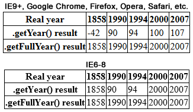
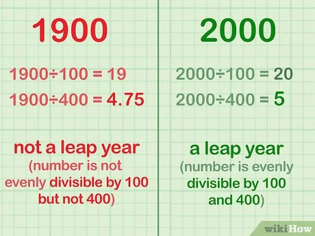

What is the Y2K problem?
The Y2K bug which even though is not really a bug, is a computer problem that was expected to affect older hardware and software on January 1, 2000. Similar problems were expected to arise on related dates, particularly September 9, 1999, and February 28, 2000.

The dates were saved on two bits. For example 1966 was saved as 66. The problem could therefore occur in the year 2000 which would be interpreted as the year 1900.
The year 2000 was not always considered leap year (because divisible by 400). This made the dates after February 28th 2000 wrong by one day.

Many older software applications used special dates like 9 September 1999 to indicate special meaning like “this item is to be saved forever” or “this item is to be deleted after 30 days.”
These applications could generate unexpected and potentially disastrous results.
To solve the Y2K problem, billions of lines of code have been written for mainframe environments in business, industry and government. But also for server and desktop operating systems and applications on UNIX, Macintosh and Microsoft Windows platforms, affecting hardware BIOS programming, operating systems, application software, custom code, macros and data files. Public agencies and large companies have taken the necessary precautions and have ensured the functioning of the systems even after January 1, 2000. Even today there are still isolated appearances of the Millenium Bug.